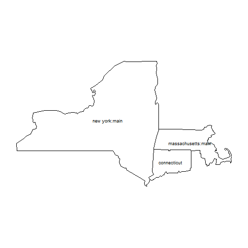
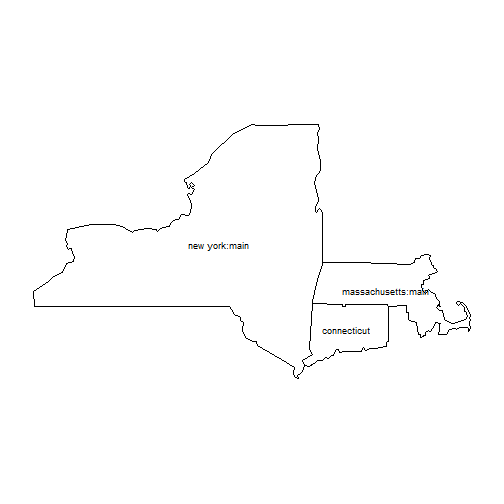

Connecticut is a small state without a Major League Baseball Team and it sits right between New York City, home of the Baseball Yankees, and Boston, home of the Red Sox

Mark Stadtmueller
Course Project
Connecticut is a small state without a Major League Baseball Team and it sits right between New York City, home of the Baseball Yankees, and Boston, home of the Red Sox

From the NYTimes Article: "Mr. Rushin came up with the name - in honor of the late Yankee catcher Thurman Munson and the retired Red Sox right fielder Trot Nixon - in 2003, and he had to guess where the line ran: "north of New Haven but south of Hartford, running the breadth of central Connecticut."
The following is a link to the article and graphic.
http://www.nytimes.com/interactive/2014/04/23/upshot/24-upshot-baseball.html?_r=0&abt=0002&abg=0
So growing up in Connecticut, Baseball and in particular the Yankees Red Sox Rivalry was very big. Most people view that the Yankees had the better of the rivalry, and when it comes to championships, they have. But, as a kid, the rivalry seemed much closer. So, I checked wikipedia and baseballreference.com and it turns out the results are close. They have been playing for 113 years and the Yankees have won about 52% of the games. More, but not alot more. So, I decided to write the shiny app to see if people could guess how many wins they Yankees have.
So, I wrote the Shiny App: https://jmstadt.shinyapps.io/APPNAME/ that simply asked how many games between the two and provided the difference as a result:
iWinsGuess <- 1200
winsDifference <- iWinsGuess-1175 #used function in the shiny app
winsDifference
## [1] 25
And checking to see if friends get it right or if they are off. In the future, it would be fun to collect the statistics on each of their guesses and draw some statistical inferences maybe based on age and whether they are a Yankees or Red Sox fan.